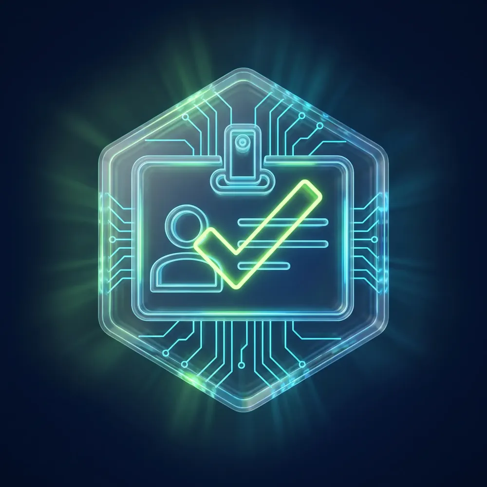

Field Notes / Trust
Licensed vs Unlicensed Dispensaries in NYC
New York City has thousands of shops selling cannabis — but only some are legal. Here is exactly how to tell a licensed adult-use dispensary from an unlicensed one, how to verify a license in under a minute, and why it matters for what you put in your body.
How Do I Know If a NYC Dispensary Is Legal?
OCM://VERIFY Scan Result: Verified
A dispensary is legal in NYC only if it holds an active New York Office of Cannabis Management (OCM) license, posts it in-store with the official OCM verification QR sticker, checks ID for 21+, and sells lab-tested products. Verify any shop in the free OCM tool first.
Licensed vs Unlicensed: Side by Side
| What to check | Licensed dispensary | Unlicensed shop |
|---|---|---|
| OCM license | Active license posted in-store and listed in the OCM verification tool | No license; not in the OCM database |
| Lab testing | Every product tested for potency, pesticides, heavy metals, microbials & solvents | No required testing; contents unverified |
| Tax | Collects New York's regulated adult-use cannabis taxes at checkout, shown on the receipt | No regulated tax collected; sales sit outside the legal market |
| Legal recourse | Protected by NY consumer-safety regulation and OCM oversight | No recourse; purchase is part of the illegal market |
| Legality | Legal under NY's Marihuana Regulation & Taxation Act (MRTA) | Selling cannabis without an OCM license is illegal in NY |
| ID / age check | Verifies 21+ with a government photo ID at entry | Does not reliably verify a 21+ government photo ID at entry |
| Packaging | Child-resistant, properly labeled, with required NY warnings | May be unlabeled, mislabeled, or look like candy |
| Menu & receipt | Real POS system (Dutchie/Jane) and an itemized receipt with tax | Cash-only handoffs; no itemized or taxed receipt |
How to Verify a License in Under a Minute
New York makes this easy — you never have to take a shop's word for it. Run these four checks before you buy.

- 1 Check the OCM verification tool Open the New York Office of Cannabis Management's Dispensary Location Verification tool at cannabis.ny.gov/dispensary-location-verification and search the shop's name or street address. A legal dispensary appears with an active license at that exact address.
- 2 Scan the OCM QR sticker in person Every licensed store displays the official OCM verification sticker (with a QR code) on the door or window, plus the printed license inside. Scan it — it should resolve to the same OCM record.
- 3 Confirm a real menu, not a back-room handoff Licensed shops run a regulated point-of-sale menu — usually Dutchie or Jane — that you can browse online before you visit. You shop in person; you cannot order cannabis for delivery from a New York retail license.
- 4 Look for lab tests and an itemized receipt Ask to see a product's Certificate of Analysis (COA) — licensed products are tested and labeled. At checkout you should get an itemized receipt that shows New York's cannabis tax. No tax line and no COA are red flags.
If a shop is missing from the OCM tool, has no posted license, no QR sticker, no real menu, and no taxed receipt, it is not a licensed dispensary.
Signs of a Licensed Dispensary
- An OCM license is posted prominently inside the store.
- The official OCM 'Dispensary Verification Tool' sticker (with QR code) is on the door or window.
- Staff check a valid 21+ government photo ID before you can shop.
- Products are lab-tested with a Certificate of Analysis available, in child-resistant packaging with NY warning labels.
- There is a real menu (often a Dutchie or Jane system) and you receive a proper receipt.
- The shop appears in the OCM dispensary location verification tool by name and address.
Verification Terms, Decoded
- OCM
New York Office of Cannabis Management — the state agency that licenses and regulates legal adult-use dispensaries.
- COA
Certificate of Analysis — the lab report verifying a product's potency and screening for pesticides, heavy metals, mold, and solvents.
- MRTA
Marihuana Regulation & Taxation Act — the 2021 New York law that legalized adult-use cannabis and created the licensed market.
- Dutchie
A regulated point-of-sale and online-menu system many licensed New York dispensaries use; you browse online, then shop in person.
What People Should Know About Unlicensed Shops
Unlicensed storefronts can look polished, but the difference is in what you cannot see. Because they skip state testing and oversight, the product on the shelf is an unknown.
- Untested products: No required screening for pesticides, heavy metals, mold, or residual solvents.
- Inaccurate labels: Potency and ingredients may not match the package — a real problem for dosing.
- No recourse: If a product is contaminated or mislabeled, there is no regulated channel to make it right.
- It is illegal: Buying from an unlicensed seller supports the illegal market and undercuts licensed, equity-focused operators.
Where Take N' Toke Fits
Take N' Toke is a licensed adult-use cannabis dispensary regulated by the New York Office of Cannabis Management, located at 994 Atlantic Avenue in Prospect Heights, Brooklyn. We post our license, check ID for 21+, and stock only lab-tested products from New York-licensed cultivators.
We are walk-in only — browse the live menu online, then shop in person with help from our budtenders. No medical card needed, no appointment required. Just a valid 21+ government photo ID.
Visit Take N' Toke
Take N' Toke Dispensary · 994 Atlantic Avenue, Brooklyn, NY 11238 · (718) 757-0094 · Open daily 10AM–10PM · takentoke.com
Frequently Asked Questions
How can I tell if a dispensary is legal in NYC?
A legal New York dispensary holds an active license from the Office of Cannabis Management (OCM), posts that license in-store, displays the official OCM 'Dispensary Verification Tool' sticker with a QR code, checks ID for 21+, and sells lab-tested products in compliant, child-resistant packaging. You can confirm any shop using the OCM dispensary location verification tool before you buy.
How do I check a New York dispensary license?
Use the New York Office of Cannabis Management's 'Dispensary Location Verification' tool at cannabis.ny.gov/dispensary-location-verification, or scan the official OCM QR sticker posted in the store window. Search by the shop's name or address; a legal dispensary appears with an active license. If a shop is not listed, it is not licensed.
Are unlicensed NYC smoke shops legal?
No. Selling cannabis without an OCM license is illegal in New York, regardless of how official a shop looks. Many unlicensed storefronts sell cannabis, but their products are not tested or regulated, and buying from them is not protected by New York's consumer-safety rules.
Is Take N' Toke a licensed dispensary?
Yes. Take N' Toke is a licensed adult-use cannabis dispensary regulated by the New York Office of Cannabis Management, located at 994 Atlantic Avenue in Prospect Heights, Brooklyn. Every product is lab-tested and sourced from New York-licensed cultivators. We are walk-in only, 21+.
What is the risk of buying from an unlicensed shop?
Unlicensed shops skip mandatory lab testing, so products may contain pesticides, heavy metals, mold, or inaccurate potency labels. There is no consumer recourse if something is wrong, and purchases support an illegal market. Licensed dispensaries exist specifically to remove those risks.
What is the difference between a licensed and unlicensed dispensary?
A licensed dispensary is in the OCM database, lab-tests every product, collects NY cannabis tax, verifies 21+ ID, and offers consumer-safety recourse. An unlicensed shop does none of these reliably and operates outside New York law.
Does a licensed dispensary use Dutchie or a real menu?
Most licensed New York dispensaries run a regulated point-of-sale menu such as Dutchie or Jane that you can browse online before visiting. You shop in person — a New York retail license does not allow ordering cannabis for delivery.


Shop Licensed and Legal
Take N' Toke is a fully licensed New York dispensary at 994 Atlantic Avenue. Every product is lab-tested and compliant. Shop with confidence.